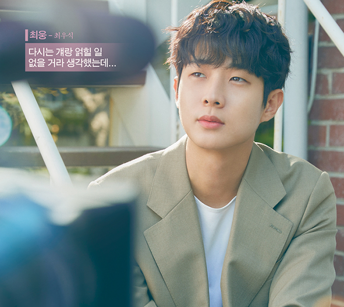
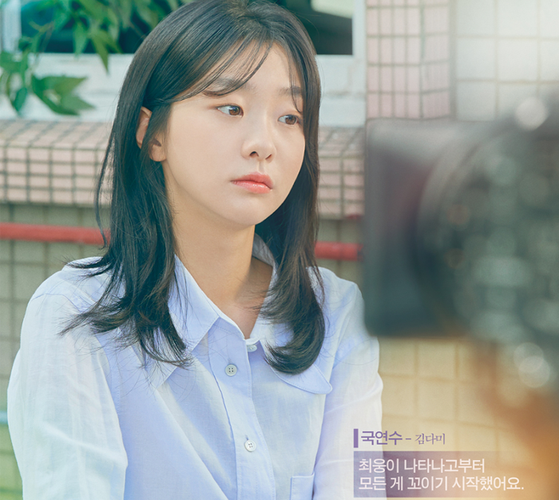
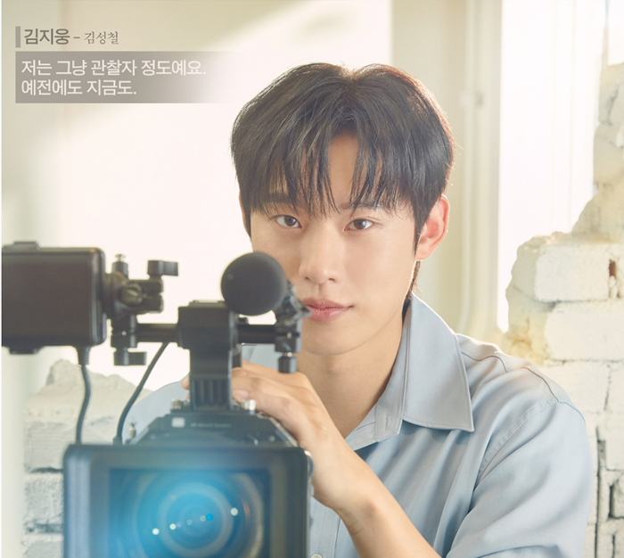
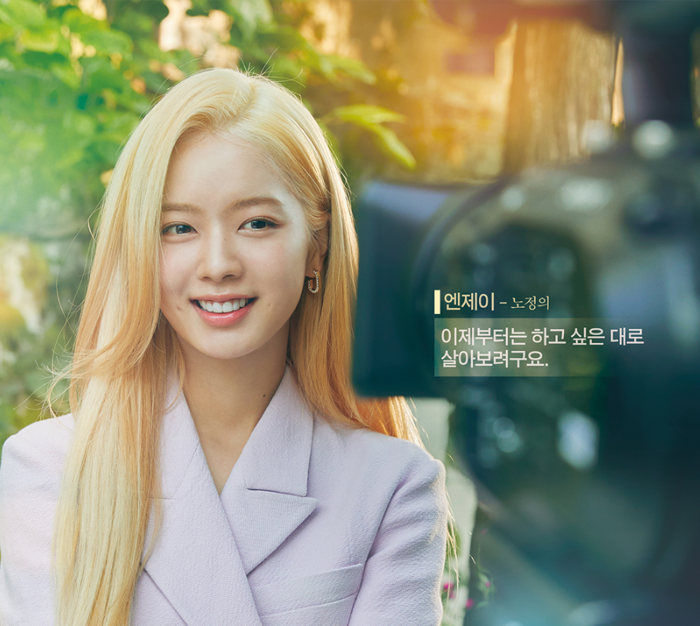

프로그램 정보
그해 우리는
방송시간
2021 12월 6일(월) 오후 10시 -
연출
김윤진, 이단
극본
이나은
제작
스튜디오N, 슈퍼문픽쳐스
출연
최우식, 김다미, 김성철, 노정의
줄거리
다큐멘터리는 평범한 사람 누구나 주인공이 될 수 있다. 공부 잘 하는 전교 1등 국연수도, 매일 잠만 자는 전교 꼴등 최웅도,
원한다면 청춘 다큐멘터리의 주인공이 될 수 있다. 문제는, 이 두사람은 원하지 않았다는 것 뿐.
여기 열아홉 그 해의 여름을 강제기록 당한 남녀가 있다. 빼도 박도 못하게 영상으로 남아 전국민 앞에서 사춘기를 보내야만 했던 두 사람은 하나부터 열까지 모든게 상극이다.
환경도, 가치관도, 목표도 다른 이 두 사람에게 공통점은 단 하나.
그 해, 첫사랑에 속절없이 젖어 들었다는 것.
그리고 이 이야기는 10년이 흐른 지금, 다시 시작된다. 순수함과 풋풋함은 멀리 던져두고 더 치열해지고, 더 악랄해진, 두 사람이 다시 만나 또 한 번의 시절을 기록한다.
말하자면 휴먼 청춘 재회 그리고 애증의 다큐멘터리랄까. 그해 보다 좀더 유치하고, 좀 더 찐득하게.
그 해 두 사람은, 우리는, 우리들은, 어떤 이야기를 만들어가고 있을까..
-

최웅
최웅(29,남)
#움직이지 않는 건물과 나무만 그리는 일러스트레이터
"싫어하는 거요? 국연수요. 아니, 국영수요."
웅이와 기사식당, 웅이와 아구찜, 웅이와 닭발, 웅이와 분식, 웅이와 비어...
한 골목을 장악한 '웅이와'의 그'웅이'도련님이다.
모든 어른과 꼬마들이 부러워하는 밥수저를 물고 태어난 도련님이지만
바쁜 부모님 탓에 어렸을때 기억이라곤 가게앞 대청마루에 혼자 앉아 있는 것 뿐이었다.
부모님이 바쁜 것도 싫고 그렇게까지 악착같이 일을 늘려가며
피곤하게 사는 어른들의 삶도 이해가 가지않는다.
혼자 있는 게 편하고, 여유롭고 평화로운게 좋다.
그래서 그냥'꿈은 없고요. 그냥 놀고 싶습니다.'
그렇게 살고 싶었고, 계획대로 되고 있었다.
연수를 만나기 전까진... -

국연수
국연수(29,여)
#쉼 없이 달리기만 하는 홍보 전문가
"내가 버릴 수 있는건 너밖에 없어"
가난하기 너무 싫은 이유는 내가 남에게 무언가를 베풀 수가 없다는 거다.
특히 날 때부터 따라다닌 가난은 클 수록 친구와 밥 한끼, 커피 한 잔 하는 것도 꺼리게 만든다.
그래서 그런 것들에 관심이 없는 척, 나만 신경 쓰는 척, 그게 연수가 살아온 방법이었다.
일찍이 부모님을 사고로 잃고 할머니와 두링 서로를 의지하며 버텨왔다.
이런 개천에서 살아남기 위해 독하게 마음 먹었다.
그래서 연수의 목표는 늘 성공이었다.
사실 성공의 기준이 크지 않다. 그냥 할머니와 나, 두식구 돈 걱정 안하고 평범하게 사는 것.
겨우 그 정도지만 연수 혼자 짊어지는 짐은 생각보다 훨씬 무거웠다.
그리고 그 해.
어깨의 고단한 짐을 한 순간 잊게 만드는 사람을 만났다.
최웅이었다.
연수에게 이런 사랑스러움이 있을 줄은 몰랐다.
남들에게 항상 사납고 차갑던 연수가 최웅 앞에선 한 없이 다정하고 따뜻하다.
하지만 누군가 최웅을 건드린다면 곧바로 다시 전투모드가 튀어 나와 가만 두질 않는다.
연수의 이런 단짠단짠의 모습을 볼 수 있는 건 최웅이 유일하다.
유일했다.
연수가 자신의 손으로 최웅을 놓기 전 까진... -

김지웅
김지웅(29,남)
#전지적 시점의 다큐멘터리 감독
"두 사람 사이에 있지만 그저 지켜만 보는것. 그게 내 역할이지."
어울리지 않게 외로움이 많은 삶이다.
타고난 생김새는 귀티 나는 도련님 스타일이지만 현실은 그렇지 않다.
집나간 아버지와 홀어머니 아래에서 충분한 사랑을 받지 못하고 자랐다.
늘 일터에 나가 있는 어머니 때문에 항상 혼자서만 지내야 했다.
유난히 외로움을 많이 타기도 했다.
처음 사귄 친구 최웅을 만나기 전까진.
어린 지웅은 최웅과 자신의 모습이 현대판 왕자와 거지라고 생각했다.
많은 걸 가진 최웅이 부러웠다. 하지만 최웅은 모든 걸 지웅과 함께했다.
자신이 가진 걸 마치 당연하단 듯 지웅과 늘 공유했다. 심지어 가장 부러웠던 최웅의 가족까지도.
최호와 연옥은 늘 지웅도 자신의 아들처럼 아끼고 다정하게 대해줬다.
지웅이 열등감을 가질 틈도 없이 사랑으로 대해준 최웅의 가족이 지웅에겐 집과 같은 곳이 되었다.
고등학생 때 처음 다큐멘터리 감독이라는 직업을 마주했다.
연수와 최웅을 따라다니며 촬영을 하는 동일의 모습을 보자 그 직업이 더 궁금해졌다.
사람에게 관심이 많고 외로움이 많은 지웅에겐 늘 사람과 부대껴 있을 수 있는 그 모습이
매력적으로 다가왔다... -

엔제이
엔제이(25,여)
#지금이 딱 최정상인 아이돌
"사랑한다는 거 아니고 사귀자는 거 아니고 그냥 좋아만 한다구요."
지금 탑 아이돌 하면 가장먼저 나오는 이름. 엔제이.
솔로로 데뷔해 9년차인 지금도 여전히 정상의 자리에서 롱런 중이다.
그런데 엔제이는 어느정도 직감하고 있다. 정상의 자리를 이제는 다음 사람에게 넘겨줘야 한다는 것.
자리에 대한 위협은 언제나 있었다.
항상 신인 여자 아이돌이 데뷔할 때마다 기사 제목에는 엔제이가 언급 되었다.
그 때마다 콧방귀를 껴 왔지만 이제는 심상치 않다.
정말 비켜줘야 할 때가 오는 거 같다.
이젠 천천히 준비중이다. 진짜 자신의 삶을 살아갈 준비.
그 시작으로 건물을 매입하기 시작했다.
내 인기는 바닥이 나도 건물은 영원히 남아 있기 때문이다.
이제 하고 싶은대로 하면서 살아볼까 한다.
사람도 만나고 먹고 싶은 것도 맘껏 먹고.
그 시작에'최웅'이 걸려들었다.
사람 하나 없이 텅 빈 최웅의 그림을 보고 있자면 어쩐지 울컥하는 기분이 들었다. 변하지 않는것.
자신이 영원히 가질 수 없을 것 같은 그것이 최웅의 그림에는 담겨있다.
그래서 그에게도 호기심이 생겼다.
자신의 곁에서 변하지 않고 그 자리에 늘 있어줄 사람을 찾고 싶다...